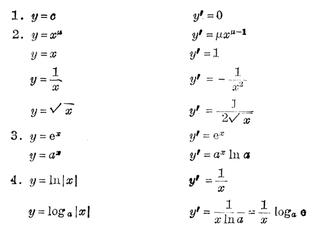
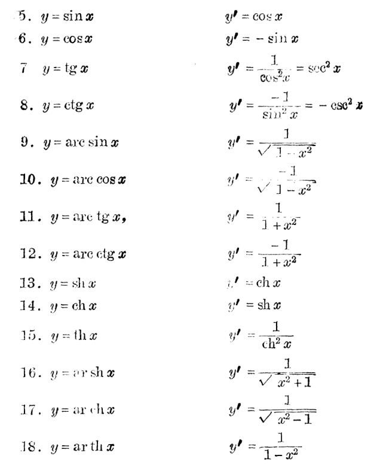
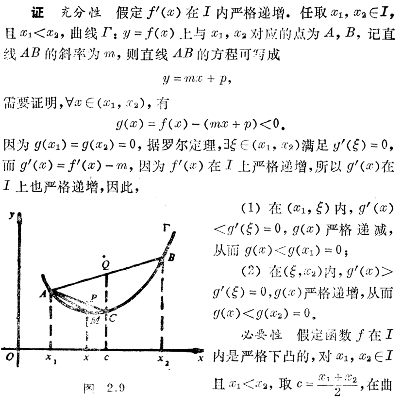
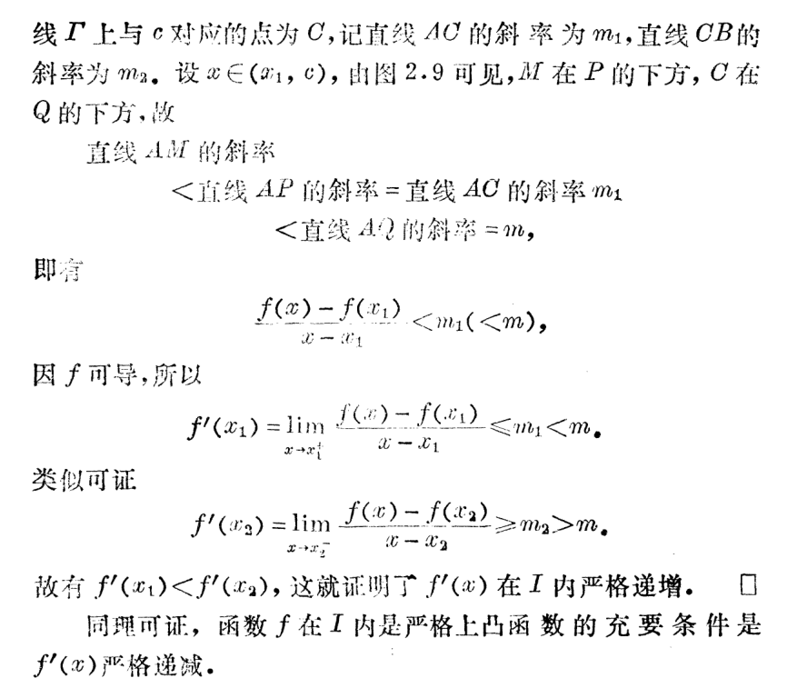

微积分（一）总结 PART II
本文简要梳理了微积分（一）的一些内容, 并记录一些套路.
一元函数的微分学
导数
- 导数的定义: 函数 \(y=f(x)\) 在 \(x_0\) 处的导数记号为
\[ f'(x_0)=y'(x_0)=f'(x)\bigg|_{x=x_0}=\dfrac{\mathrm df}{\mathrm dx}\bigg|_{x=x_0}=\dfrac{\mathrm dy}{\mathrm dx}\bigg|_{x=x_0}. \]
值为
\[ f'(x_0)=\lim_{x\to x_0}\dfrac{f(x)-f(x_0)}{x-x_0}=\lim_{\Delta x\to 0}\dfrac{f(x_0+\Delta x)-f(x_0)}{\Delta x}. \]
几何意义为函数图像在 \((x_0, f(x_0))\) 处的切线的斜率.
函数在 \(x_0\) 处可导的充要条件是左右导数存在且相等.
- 导函数: 若 \(f\) 在开区间 \(I\) 处处可导, 则 \(f\) 在 \(I\) 上可导, 存在导函数, 记号为
\[ f', \dfrac{\mathrm df}{\mathrm dx}, y', \dfrac{\mathrm dy}{\mathrm dx}. \]
值为
\[ f'(x)=\lim_{h\to 0}\dfrac{f(x+h)-f(x)}{h}, x\in I. \]
若 \(I\) 改为闭区间, 则要求在闭区间端点处单侧导数存在.
连续可导: \(f\) 在 \(I\) 存在导函数且导函数连续, 记作 \(f\in C^1(I)\).
增量公式: 若 \(f\) 在 \(x\) 可导, 则 \(f(x+\Delta x)=f(x)+f'(x)\Delta x+o(\Delta x)\).
可导与连续的关系: 在 \(x_0\) 处可导一定在 \(x_0\) 连续, 反之未然.
达布定理: 导函数的介值定理(无需连续). 由此推出区间上处处有定义的导函数无第一类间断点和无穷型间断点.(可以看文章1和文章2)
微分
- 微分的定义: 若在 \(a\) 附近, 函数 \(y=f(x)\) 有
\[ \Delta y = A\Delta x+o(\Delta x). \]
其中 \(A\) 与 \(\Delta x\) 无关, 则称 \(f\) 在 \(a\) 可微, 微分为 \(A\Delta x\), 记作
\[ \mathrm d f(a) = \mathrm d y\bigg|_{x=a}=A\Delta x=A\mathrm dx. \]
\(\mathrm dy\) 是 \(\Delta y\) 的线性主部.
(约定 \(\mathrm dx\) 为 \(\Delta x\))
(一元微分)可导与可微的等价性
函数 \(f\) 在 \(a\) 可微的的充要条件是函数在 \(a\) 可导, 且 \(\mathrm dy=f'(x)\mathrm dx\).
证明
- 必要性. 由 \(f\) 在 \(a\) 可微, 有 \(\Delta y=A\Delta x+o(\Delta x)\), 则 \(\dfrac{\Delta y}{\Delta x}=A+\dfrac{o(\Delta x)}{\Delta x}\). 取 \(\Delta x\to 0\), 有 \(f'(a)=\lim\limits_{\Delta x\to 0}\dfrac{\Delta y}{\Delta x}=A\).
- 充分性. 由 \(f\) 在 \(a\) 可导, 由增量公式有 \(\Delta y=f'(a)\Delta x+o(\Delta x)\), 这就是微分的定义, 故 \(\mathrm dy\bigg|_{x=a}=f'(a)\mathrm dx\).
由等价性知, \(\mathrm dy=f'(x)\mathrm dx\). 从而我们明白了使用 \(\dfrac{\mathrm dy}{\mathrm dx}\) 表示导数记号的合理性. 从而导数又叫微商.
导数与微分的计算
以下不再区分可导和可微.
- 四则运算:
- \((u\pm v)'=u'\pm v'\), 或者写成 \(\mathrm d(u\pm v)=\mathrm du\pm \mathrm dv\).
- \((uv)'=u'v+uv'\), 或者写成 \(\mathrm d(uv)=v\mathrm du+u\mathrm dv\).
- \((v\ne 0)\), \(\left(\dfrac{u}{v}\right)'=\dfrac{u'v-uv'}{v^2}\), 或者写成 \(\mathrm d\left(\dfrac{u}{v}\right)=\dfrac{v\mathrm du-u\mathrm dv}{v^2}\).
证明
- 由导数定义 \[ \begin{aligned} &(u+v)' \\ =&\lim_{h\to 0}\dfrac{[u(x+h)+v(x+h)]-[u(x)+v(x)]}{h} \\ =&\lim_{h\to 0}\dfrac{u(x+h)-u(x)}{h}+\lim_{h\to 0}\dfrac{v(x+h)-v(x)}{h} \\ =&u'+v'. \end{aligned} \] 减法同理.
- 同样地, \[ \begin{aligned} &(uv)' \\ =&\lim_{h\to 0}\dfrac{u(x+h)v(x+h)-u(x)v(x)}{h} \\ =&\lim_{h\to 0} \dfrac{v(x+h)[u(x+h)-u(x)]}{h}+\lim_{h\to 0}\dfrac{u(x)[v(x+h)-v(x)]}{h} \\ =&u'v+uv'. \end{aligned} \]
- 同样地, \[ \begin{aligned} &\left(\dfrac{u}{v}\right)' \\ =&\lim_{h\to 0}\dfrac{1}{h}\left[\dfrac{u(x+h)}{v(x+h)}-\dfrac{u(x)}{v(x)}\right] \\ =&\lim_{h\to 0}\dfrac{u(x+h)v(x)-u(x)v(x+h)}{h\cdot v(x+h)v(x)} \\ =&\dfrac{1}{v^2}\lim_{h\to 0}\dfrac{v(x)[u(x+h)-u(x)]}{h}-\dfrac{1}{v^2}\lim_{h\to 0}\dfrac{u(x)[v(x+h)-v(x)]}{h} \\ =&\dfrac{u'v-uv'}{v^2}. \end{aligned} \]
- 复合运算
若 \(y=f(u), u=u(x)\), 则复合函数 \(y=(f\circ u)(x)=f(u(x))\) 的导数记作
\[ f'_x(u(x))=[f(u(x))]'=\dfrac{\mathrm df(u(x))}{\mathrm dx}=\dfrac{\mathrm dy}{\mathrm dx}. \]
值为
\[ [f(u(x))]'=f'(u(x))\cdot u'(x)=\dfrac{\mathrm dy}{\mathrm du}\cdot \dfrac{du}{dx}. \]
注意记号! 不加下标的话, \(f'(u(x))\) 可以看成是把 \(u(x)\) 的值代入 \(f\) 的导函数中(即对 \(u(x)\) 求导). 而 \([f(u(x))]'\) 可以看成是把中括号里面展开成 \(x\) 的函数再求导(即对 \(x\) 求导).
上面的法则写成微分形式为
\[ \mathrm d f(u(x))=f'(u(x))u'(x)\mathrm dx. \]
继续用微分的定义, 还发现
\[ \mathrm df(u)=f'(u)\mathrm du. \]
这就是一阶微分的形式不变性.
证明
该法则证明如下: \[ \begin{aligned} &[f(u(x))]' \\ =&\lim_{h\to 0}\dfrac{f(u(x+h))-f(u(x))}{h} \\ =&\lim_{\Delta u\to 0}\dfrac{f(u(x+h))-f(u(x))}{u(x+h)-u(x)}\cdot \lim_{h\to 0}\dfrac{u(x+h)-u(x)}{h} \\ =&f'(u(x))\cdot u'(x). \end{aligned} \]
- 反函数
对于 \(y=f(x), x=\varphi(y)\), 我们对 \(y\) 经由 \(\varphi\) 求导有
\[ f'(x)=\dfrac{1}{\varphi'(y)}=\dfrac{1}{\varphi'(f(x))}. \]
写成微分形式有
\[ \mathrm dy=\dfrac{1}{\mathrm dx/\mathrm dy}\mathrm dx. \]
证明
证明如下: \[ \begin{aligned} &f'(x) \\ =&\lim_{\Delta x\to 0}\dfrac{f(x+\Delta x)-f(x)}{(x+\Delta x) - x} \\ =&\lim_{\Delta y\to 0}\dfrac{(y+\Delta y)-y}{\varphi(y+\Delta y)-\varphi(y)} \\ =&\dfrac{1}{\varphi'(y)}=\dfrac{1}{\varphi'(f(x))} \end{aligned} \]
- 隐函数
对于 \(f(x, y)=0\) 形式的隐函数求导, 如对 \(x\) 求导, 只需把 \(y\) 看成 \(x\) 的函数 \(y=y(x)\), 等式两边同时求导. 别忘记 \(y\) 的部分使用复合求导即可. 或者求微分, 此时不需考虑这些, 直接求即可. 求高阶导是也是如此.
- 参数方程
对于参数方程 \(\begin{cases}x=x(t),\\y=y(t).\end{cases}\), 求导公式为
\[ \dfrac{\mathrm dy}{\mathrm dx}=\dfrac{\mathrm dy/\mathrm dt}{\mathrm dx/\mathrm dt}=\dfrac{y'(t)}{x'(t)}. \]
求高阶导时, 如二阶导, 用:
\[ \dfrac{\mathrm d}{\mathrm dx}\left(\dfrac{\mathrm dy}{\mathrm dx}\right)=\dfrac{\mathrm d}{\mathrm dx/\mathrm dt}\left(\dfrac{\mathrm d(y'(t)/x'(t))}{\mathrm dt}\right) \]
- 极坐标
对于极坐标 \(\rho=\rho(\theta)\), 转化为参数方程 \(\begin{cases}x=\rho(\theta)\cos \theta \\ y=\rho(\theta)\sin\theta\end{cases}\), 用参数方程求导得
\[ \dfrac{\mathrm d y}{\mathrm dx} = \dfrac{y'(\theta)}{x'(\theta)}=\dfrac{\rho'(\theta)\sin\theta +\rho(\theta)\cos \theta}{\rho'(\theta)\cos\theta - \rho(\theta)\sin \theta}. \]
- 基本公式表
展开表格


展开前 12 项证明
\(f(x)=c\), 则 \(f'(x)=\lim\limits_{h\to 0}\dfrac{0-0}{h}=0\).
\(f(x)=x^\mu\), 则 \[ \begin{aligned} f'(x)&=\lim_{h\to 0}\dfrac{(x+h)^\mu-x^\mu}{h} \\ &=x^\mu\lim_{h\to 0}\dfrac{(1+\frac{h}{x})^\mu-1}{h} \\ &=x^\mu \cdot \dfrac{\mu}{x}=\mu x^{\mu-1}. \end{aligned} \]
\(f(x)=e^x\), 则 \[ \begin{aligned} f'(x)&=\lim_{h\to 0}\dfrac{e^{x+h}-e^x}{h} \\ &=e^x\cdot \lim_{h\to 0}\dfrac{e^h-1}{h}=e^x. \end{aligned} \] \(f(x)=a^x\) 可以 写成 \(f(x)=e^{x\ln a}\) 再用复合函数求导.
进一步我们可以得到, \((\ln |x|)'=\dfrac{1}{x}\).
\(f(x)=\ln x\), 则 \[ \begin{aligned} f'(x)&=\lim_{h\to 0}\dfrac{\ln(x+h)-\ln x}{h} \\ &=\lim_{h\to 0}\dfrac{\ln (1+\dfrac{h}{x})}{h} \\ &=\dfrac{1}{x}. \end{aligned} \] \(f(x)=\log_a x\), 可以写成 \(f(x)=\dfrac{\ln x}{\ln a}\) 再求导.
\(f(x)=\sin x\), 则 \[ \begin{aligned} f'(x)&=\lim_{h\to 0}\dfrac{\sin(x+h)-\sin(x)}{h} \\ &=\lim_{h\to 0}\dfrac{2\cos(x+h/2)\sin(h/2)}{h} \\ &=\cos x. \end{aligned} \]
\(f(x)=\cos x=\sin(x+\dfrac{\pi}{2})\), 则 \(f'(x)=\cos(x+\dfrac{\pi}{2})=-\sin x\).
\(f(x)=\tan x\), 则 \[ \begin{aligned} f'(x)&=\left(\dfrac{\sin x}{\cos x}\right)' \\ &=\dfrac{\cos^2 x+\sin^2 x}{\cos^2 x} \\ &=\dfrac{1}{\cos^2x}=\sec^2 x. \end{aligned} \]
\(f(x)=\cot x=\tan(\dfrac{\pi}{2}-x)\), 则 \(f'(x)=-\sec^2(\dfrac{\pi}{2}-x)=-\csc^2 x\).
\(y=f(x)=\arcsin x, x=\varphi(y)=\sin y, y\in\left[-\dfrac{\pi}{2}, \dfrac{\pi}{2}\right]\), 则 \[ \begin{aligned} f'(x)&=\dfrac{1}{\varphi'(y)} \\ &=\dfrac{1}{\cos y} \\ &=\dfrac{1}{\sqrt{1-\sin^2y}} \\ &=\dfrac{1}{\sqrt{1-x^2}}. \end{aligned} \]
\(f(x)=\arccos x=\dfrac{\pi}{2}-\arcsin x\), 则 \(f'(x)=-\dfrac{1}{\sqrt{1-x^2}}\).
\(y=f(x)=\arctan x, x=\varphi(y)=\tan y\), 则 \[ \begin{aligned} f'(x)&=\dfrac{1}{\varphi'(y)} \\ &=\dfrac{1}{\sec^2y} \\ &=\dfrac{1}{\tan^2y+1} \\ &=\dfrac{1}{1+x^2}. \end{aligned} \]
\(f(x)=\operatorname{arccot} x=\dfrac{\pi}{2}-\arctan x\), 则 \(f'(x)=-\dfrac{1}{1+x^2}\).
双曲函数扩展及后 6 项证明
关于更详细的内容, 你可以看这篇知乎专栏, 也可以看看同济的高等数学课本.
双曲函数的定义 \[ \begin{aligned} \operatorname{sh} x&=\dfrac{e^x-e^{-x}}{2}, \\ \operatorname{ch} x&=\dfrac{e^x+e^{-x}}{2}, \\ \operatorname{th} x&=\dfrac{\operatorname{sh} x}{\operatorname{ch} x}=\dfrac{e^x-e^{-x}}{e^x+e^{-x}}, \\ \operatorname{arsh} x&=\ln(x+\sqrt {x^2+1}), \\ \operatorname{arch} x&=\ln(x+\sqrt {x^2-1}), \\ \operatorname{arth} x&=\dfrac{1}{2}\ln\dfrac{1+x}{1-x}. \end{aligned} \]
重要的性质 \[ \begin{aligned} \operatorname{sh} (x+y)&=\operatorname{sh} x\operatorname{ch} y+\operatorname{ch} x\operatorname{sh} y, \\ \operatorname{sh} (x-y)&=\operatorname{sh} x\operatorname{ch} y-\operatorname{ch} x\operatorname{sh} y, \\ \operatorname{ch} (x+y)&=\operatorname{ch} x\operatorname{ch} y+\operatorname{sh} x\operatorname{sh} y, \\ \operatorname{ch} (x-y)&=\operatorname{ch} x\operatorname{ch} y- \operatorname{sh} x\operatorname{sh} y. \end{aligned} \] 从上面可得一些性质, 需要记住的是 \(\operatorname{ch}^2 x-\operatorname{sh}^2 x=1\).
证明导数公式
- \(f(x)=\operatorname{sh} x=\dfrac{e^x-e^{-x}}{2}\), 则 \(f'(x)= \dfrac{e^x+e^{-x}}{2}=\operatorname{ch} x\).
- 类似于 13. 可得, \(f(x)=\operatorname{ch} x\), 则 \(f'(x)=\operatorname{sh} x\).
- \(f(x)=\operatorname{th} x=\dfrac{\operatorname{sh} x}{\operatorname{ch} x}\), 则 \[ \begin{aligned} f'(x)&=\dfrac{\operatorname{ch}^2 x-\operatorname{sh}^2 x}{\operatorname{ch}^2 x}=\dfrac{1}{\operatorname{ch}^2 x} \end{aligned} \]
- \(y= f(x)=\operatorname{arsh} x, x=\varphi(y)=\operatorname{sh} y\), 则 \[ \begin{aligned} f'(x)&=\dfrac{1}{\varphi'(y)} \\ &=\dfrac{1}{\operatorname{ch}(y)} \\ &=\dfrac{1}{\sqrt{\operatorname{sh}^2 y+1}} \\ &=\dfrac{1}{\sqrt{x^2+1}} \end{aligned} \]
- \(y= f(x)=\operatorname{arch}x, x=\varphi(y)=\operatorname{ch} y\), 则 \[ \begin{aligned} f'(x)&=\dfrac{1}{\varphi'(y)} \\ &=\dfrac{1}{\operatorname{sh} y} \\ &=\dfrac{1}{\sqrt{\operatorname{ch}^2y - 1}} \\ &=\dfrac{1}{\sqrt {x^2-1}} \end{aligned} \]
- \(y=f(x)=\operatorname{arth} x, x=\varphi(y)=\operatorname{th}y\), 则 \[ \begin{aligned} f'(x)&=\dfrac{1}{\varphi'(y)} \\ &=\operatorname{ch}^2 y \\ &=\dfrac{\operatorname{ch}^2y}{\operatorname{ch}^2y-\operatorname{sh}^2y} \\ &=\dfrac{1}{1-\operatorname{th}^2y} \\ &=\dfrac{1}{1-x^2} \end{aligned} \]
高阶导数和高阶微分
- \(n\) 阶导数的定义: \(y^{(n)}=(y^{(n-1)})'\)
\(n\) 阶导数记作
\[ f^{(n)}, \dfrac{\mathrm d^nf}{\mathrm d x^n}, y^{(n)}, \dfrac{\mathrm d^ny}{\mathrm d x^n} \]
若 \(n\le 3\), 也可以用若干撇 \((')\) 代替.
- \(n\) 阶连续可导: \(f\) 在 \(I\) 上 \(n\) 阶导函数连续, 记作 \(f\in C^n(I)\).
常用的高阶导数
\(f(x)=c\), 则 \(f^{(n)}(x)=0, n\ge 1\).
\(f(x)=a^x\), 则 \(f^{(n)}(x)=a^x(\ln a)^n\).
\(f(x)=\ln x\), 则 \(f^{(n)}(x)=\dfrac{(-1)^{n-1}(n-1)!}{x^n}, n\ge 1\).
\(f(x)=\sin (ax+b)\), 则 \(f^{(n)}(x)=a^{n}\sin (ax+b+\dfrac{n\pi}{2})\). \(f(x)=\cos (ax+b)\) 类似.
\(f(x)=\dfrac{1}{x+a}\), 则 \(f^{(n)}(x)=\dfrac{(-1)^n\cdot n!}{(x+a)^{n+1}}\).
\(f(x)=x^\mu\), 则 \(f^{(n)}(x)=\mu^{\underline{n}}x^{\mu-n}\), 其中 \(\mu^{\underline{n}}=\mu(\mu-1)\cdots (\mu-n+1)\).
- 高阶导数运算法则
- \((u\pm v)^{(n)}=u^{(n)}\pm v^{(n)}\)
- \((cu)^{(n)}=cu^{(n)}\).
- 莱布尼兹公式: \((uv)^{(n)}=\sum\limits_{i=0}^nC_n^iu^{(n-i)}v^{(i)}\)
莱布尼斯公式证明
用归纳法, 当 \(n=0\) 时成立.
设当 \(n=k-1(k\ge 1)\) 时成立, 即 \((uv)^{(k-1)}=\sum\limits_{i=0}^{k-1}C_{k-1}^iu^{(k-1-i)}v^{i}\).
则当 \(n=k\) 时, 有 \[ \begin{aligned} (uv)^{(k)}&=[(uv)']^{(k-1)} \\ &=(u'v)^{(k-1)}+(uv')^{k-1} \\ &=\sum_{i=0}^{k-1}C_{k-1}^iu^{(k-i)}v^{(i)}+\sum_{i=0}^{k-1}C_{k-1}^iu^{(k-1-i)}v^{(i+1)} \\ &=C_{k-1}^0u^{(k)}v^{(0)}+C_{k-1}^{k-1}u^{(0)}v^{(k)}+\sum_{i=1}^{k-1}(C_{k-1}^i+C_{k-1}^{i-1})u^{(k-i)}v^{(i)} \\ &=\sum_{i=0}^kC_k^iu^{(k-i)}v^{(i)}. \end{aligned} \] 由数学归纳法, 得证.
- 高阶微分的定义: \(\mathrm d^ny=\mathrm d(\mathrm dy)\).
如果 \(x\) 是自变量, 那么:
由于 \(\mathrm d^2 y=\mathrm d(y'\mathrm dx)=y''\mathrm dx\cdot \mathrm dx+y'\mathrm d(\mathrm dx)\), 而 \(\mathrm d(\mathrm dx)=0\), 记 \((\mathrm dx)^2\) 为 \(\mathrm dx^2\), 故写为 \(\mathrm d^2y=y''\mathrm dx^2\).
同理, \(\mathrm d^ny=f^{(n)}(x)\mathrm dx^n\). 从而我们可以理解高阶导数记号的合理性.
这样的高阶微分同样具有高阶导数的三条运算法则.
但是高阶导数不具有形式不变性!
比如 \(y=f(x), x=x(t)\), 则在上面的式子中 \(\mathrm d^2y=y''\mathrm dx^2+y'\mathrm d^2x\), 其中 \(\mathrm d^2x\) 是 \(x(t)\) 的二阶微分, 一般情况下不为 \(0\).故此时不具有 \(\mathrm d^2y=y''\mathrm dx^2\) 的性质. 对更高阶的微分更是如此.
微分中值定理
- 极值: \(f\) 在 \(I\) 上有定义, 若在 \(a\in I\) 的一个邻域 \(U(a)\) 内, 有 \(\forall x\in U(a)\), \(f(x)\le(\ge)f(a)\), 则称 \(f\) 在 \(a\) 处取到极大(小)值, \(a\) 为极大(小)值点. 若严格不等式成立, 则称是严格极值.
- 费马定理: 可导的极值点一定是驻点(导数为零的点). (可以用左、右极限的保号性证明必须为零)
注意: 反之未必然.
- 罗尔定理: 若 \(f\) 在 \([a, b]\) 连续, 在 \((a, b)\) 可导, 且 \(f(a)=f(b)\), 则 \(\exists \xi\in (a, b), f'(\xi)=0\).
证明
设在 \([a, b]\) 上 \(f\) 有最大值 \(M\), 最小值 \(m\).
- 若 \(M=m\), 则 \(f(x)\equiv c, x\in [a, b]\), 故 \(f'(x)=0, \forall x\in(a, b)\), 得证.
- 若 \(m<M\), 则 \(m\) 和 \(M\) 取到处至少有一不为端点值(否则应该相等), 不妨是最大值 \(M\). 记为 \(f(c)=M\), 则 \(f(c)=M\) 同时也是极大值. 则由费马定理, 有 \(f'(c)=0\). 证毕.
- 拉格朗日中值定理: 若 \(f\) 在 \([a, b]\) 连续, 在 \((a, b)\) 可导, 则 \(\exists \xi\in (a, b)\), 使得
\[ f'(\xi)=\dfrac{f(b)-f(a)}{b-a}. \]
证明
证法1: 直线 \(AB\) 的方程为 \(y=f(a)+\dfrac{f(b)-f(a)}{b-a}(x-a)\), 让 \(f(x)\) 减去它, 构造辅助函数: \[ F(x) = f(x)-f(a)-\dfrac{f(b)-f(a)}{b-a}(x-a). \] 则 \(F(b)=F(a)=0\), 由罗尔定理, 存在 \(\xi\in(a, b)\), 使得 \(F'(\xi)=0\), 即 \[ f'(\xi)=\dfrac{f(b)-f(a)}{b-a}. \] 证法2: 即 \(f'(x)-\dfrac{f(b)-f(a)}{b-a}=0\) 有根, 令 \(F(x)=f(x)-\dfrac{f(b)-f(a)}{b-a}x\), 则 \(F(a)=F(b)=\dfrac{bf(a)-af(b)}{b-a}\), 由罗尔定理, 存在 \(\xi\in(a, b)\), 使得 \(F'(\xi)=0\), 得证.
推论 1: (有限增量公式) \(f(x+\Delta x)=f(x)+f'(x+\theta \Delta x)\Delta x, \theta\in(0, 1)\).(在 \(x\) 和 \(x+\Delta x\) 之间使用拉格朗日中值定理)
推论 2: 设 \(f\) 在 \((a, b)\) 上可导, 则 \((a, b)\) 上 \(f(x)\) 是常数的充要条件是 \(f'(x)=0\).(必要性显然, 充分性在任意两点间用拉格朗日中值定理)
推论 3: 设 \(f\) 和 \(g\) 在 \(I\) 可导, 且 \(f'(x)=g'(x)\), 则在 \(I\) 内有 \(f(x)=g(x)+C\), \(C\) 为常数.(由推论 2 可得)
- 柯西中值定理: 设 \(f, g\) 均在 \([a, b]\) 连续, 在 \((a, b)\) 可导, 且在 \((a, b)\) 上 \(g'(x)\ne 0\), 则 \(\exists \xi\in(a, b)\), 使得 \[ \dfrac{f(b)-f(a)}{g(b)-g(a)}=\dfrac{f'(\xi)}{g'(\xi)}. \]
证明
即证 \([g(b)-g(a)]f'(x)-[f(b)-f(a)]g'(x)=0\) 有根. 构造 \(F(x)=[g(b)-g(a)]f(x)-[f(b)-f(a)]g(x)\), 则 \(F(a)=F(b)=f(a)g(b)-f(b)g(a)\), 由罗尔定律可知存在 \(\xi\in(a, b)\), 使得 \(F'(\xi)=0\), 变形后立得.
洛必达法则
用于解决求不定型极限的问题(主要是 \(\dfrac{0}{0}, \dfrac{\infty}{\infty}\), 其它可以转化为这两个)
求 \(\dfrac{0}{0}\) 型的法则(有穷点): 若在 \(U^o(a)\) 中, \(f'(x), g'(x)\) 存在且 \(g'(x)\ne 0\), \(x\to a\) 时 \(f(x), g(x)\to 0\), 且 \(\lim\limits_{x\to a}\dfrac{f'(x)}{g'(x)}=A\)(或无穷), 则有
\[ \lim_{x\to a}\dfrac{f(x)}{g(x)}=\lim_{x\to a}\dfrac{f'(x)}{g'(x)}. \]
证明
不妨填充可去间断点 \(f(a)=g(a)=0\). 对右邻域内的任一点 \(x\), 在 \((a, x)\) 之间使用拉格朗日中值定理, 可得 \[ \dfrac{f(x)}{g(x)}=\dfrac{f(x)-f(a)}{g(x)-g(a)}=\dfrac{f'_+(\xi)}{g'_+(\xi)}. \]
其中 \(\xi\in(a, x)\). 当 \(x\to a+\) 时, \(\xi\to a+\). 故取极限可得
\[ \lim_{x\to a+}\dfrac{f(x)}{g(x)}=\lim_{x\to a+}\dfrac{f'(x)}{g'(x)}. \]
对左侧同理.
其它几个类似的法则
求 \(\dfrac{0}{0}\) 型的法则(无穷点): 若在 \(|x|>N\) 时, \(f'(x), g'(x)\) 存在且 \(g'(x)\ne 0\), \(x\to \infty\) 时 \(f(x), g(x)\to 0\), 且 \(\lim\limits_{x\to \infty}\dfrac{f'(x)}{g'(x)}=A\)(或无穷), 则有
\[ \lim_{x\to \infty}\dfrac{f(x)}{g(x)}=\lim_{x\to \infty}\dfrac{f'(x)}{g'(x)}. \]
证明方法: 作代换 \(t=\dfrac{1}{x}\to 0\), 用第一个法则.
求 \(\dfrac{\infty}{\infty}\) 型的法则(有穷点): 若在 \(U^o(a)\) 中, \(f'(x), g'(x)\) 存在且 \(g'(x)\ne 0\), \(x\to a\) 时 \(f(x), g(x)\to \infty\), 且 \(\lim\limits_{x\to a}\dfrac{f'(x)}{g'(x)}=A\)(或无穷), 则有
\[ \lim_{x\to a}\dfrac{f(x)}{g(x)}=\lim_{x\to a}\dfrac{f'(x)}{g'(x)}. \]
证明
只证右侧, 左侧同理. 分情况讨论.
情况 1: \(A=0\). 则 \(\lim\limits_{x\to a+}\dfrac{f'(x)}{g'(x)}=0\), 故 \(\forall\varepsilon>0\), \(\exists \delta >0\), 当 \(a<x<a+\delta\) 时, 有 \(\left|\dfrac{f'(x)}{g'(x)}\right|<\dfrac{\varepsilon}{2}\).
由柯西中值定理, 存在 \(\xi\in(x, a+\delta)\), 使得 \[ \dfrac{f(x)-f(a+\delta)}{g(x)-g(a+\delta)}=\dfrac{f'(\xi)}{g'(\xi)}. \] 即 \[ \dfrac{f(x)}{g(x)}=\dfrac{f(a+\delta)}{g(x)}+\dfrac{f'(\xi)}{g'(\xi)}\left[1-\dfrac{g(a+\delta)}{g(x)}\right] \] 则容易证明得到(因为 \(g(x)\to \infty\)), 存在 \(\eta<\delta\), 使得 \(a<x<a+\eta\) 时, 有 \[ \left|\dfrac{f(x)}{g(x)}\right|<\varepsilon \] 故 \(\lim\limits_{x\to a+}\dfrac{f(x)}{g(x)}=0\)
情况 2: \(A\) 为常数, 则令 \(f_0=f-Ag\)(注意到上面的证明过程只用到了 \(g(x)\to \infty\), 故其实 \(f(x)\to\infty\) 不是本质的条件), 即可证明.
情况 3: \(A\) 为无穷, 把情况 1 中 \(\varepsilon\) 限制改为 \(G\) 限制即可.
证毕.
求 \(\dfrac{\infty}{\infty}\) 型的法则(无穷点): 若在 \(|x|>N\) 时, \(f'(x), g'(x)\) 存在且 \(g'(x)\ne 0\), \(x\to \infty\) 时 \(f(x), g(x)\to \infty\), 且 \(\lim\limits_{x\to \infty}\dfrac{f'(x)}{g'(x)}=A\)(或无穷), 则有
\[ \lim_{x\to \infty}\dfrac{f(x)}{g(x)}=\lim_{x\to \infty}\dfrac{f'(x)}{g'(x)}. \]
证明方法: 作代换 \(t=\dfrac{1}{x}\to 0\), 用上一个法则.
泰勒公式
- 设 \(f\) 在 \(a\) 处有直到 \(n\) 阶的导数, 则 \(n\) 阶泰勒多项式为
\[ P_n(x)=\sum_{k=0}^n\dfrac{f^{(k)}(x_0)}{k!}(x-a)^k \]
则 \(f(x)=P_n(x)+r_n(x)\), \(r_n(x)\) 称为余项.
可知:
\[ \begin{aligned} P^{(k)}(a)&=f^{(k)}(a), &(0\le k\le n) \\ P^{(k)}(a)&=0, &(k\ge n+1) \\ r_n^{(k)}(a)&=0, &(0\le k\le n) \\ r_n^{(k)}(a)&=f^{(k)}(a), &(k \ge n+1, \textnormal{若存在}) \end{aligned} \]
- 皮亚诺余项: \(r_n(x)=o((x-a)^n)\).
证明
因为 \(f\) 有直到 \(n\) 阶的导数, 故在 \(a\) 的邻域内有直到 \(n-1\) 阶的导数. \[ \begin{aligned} \lim_{x\to a}\dfrac{r_n(x)}{(x-a)^n}&=\lim_{x\to a}\dfrac{f(x)-P_n(x)}{(x-a)^n} \\ &=\lim_{x\to a}\dfrac{f'(x)-P_n'(x)}{n(x-a)^{n-1}} \\ &=\cdots \\ &=\lim_{x\to a}\dfrac{f^{(n-1)}(x)-P_n^{(n-1)}(x)}{n!(x-a)} \\ &=\dfrac{1}{n!}\lim_{x\to a}\left[\dfrac{f^{(n-1)}(x)-f^{(n-1)}(a)}{x-a}-\dfrac{P^{(n-1)}(x)-P^{(n-1)}(a)}{x-a}\right] \\ &=\dfrac{1}{n!}[f^{(n)}(x)-P^{(n)}(x)] = 0. \end{aligned} \] 故 \(r_n(x)=o((x-a)^n)\).
- 拉格朗日余项. 使用它需要附加条件: 若 \(f\) 在 \(a\) 的邻域内有直到 \(n+1\) 阶导数, 则 \[ r_n(x)=\dfrac{f^{(n+1)}(\xi)}{(n+1)!}(x-a)^{n+1}=\dfrac{f^{(n+1)}(a+\theta(x-a))}{(n+1)!}(x-a)^{n+1}. \] 其中, \(\xi\) 在 \(a\) 和 \(x\) 之间(不含), \(0<\theta<1\).
证明
\(n+1\) 次使用柯西中值定理: \[ \begin{aligned} \dfrac{r_n(x)}{(x-a)^{n+1}}&=\dfrac{r_n(x)-r_n(a)}{(x-a)^{n+1}-(a-a)^{n+1}} \\ &=\dfrac{r_n'(\xi_1)}{(n+1)(\xi_1-a)^n} \\ &=\dfrac{r_n'(\xi_1)-r_n'(a)}{(n+1)[(\xi_1-a)^n-(a-a)^n]} \\ &=\dfrac{r_n''(\xi_2)}{(n+1)n(\xi_2-a)^{n-1}} \\ &=\cdots \\ &=\dfrac{r^{(n)}(\xi_n)}{(n+1)!(\xi_n-a)} \\ &=\dfrac{r^{(n)}(\xi_n)-r^{(n)}(a)}{(n+1)!(\xi_n-a)} \\ &=\dfrac{r^{(n+1)}(\xi)}{(n+1)!}=\dfrac{f^{(n+1)}(\xi)}{(n+1)!} \end{aligned} \] 其中 \(\xi_1\) 位于 \(a\) 和 \(x\) 之间, \(\xi_i\) 位于 \(a\) 和 \(\xi_{i-1}\) 之间 \((2\le i\le n)\), \(\xi\) 位于 \(a\) 和 \(\xi_n\) 之间, 也就位于 \(a\) 和 \(x\) 之间.
其增量形式显然.
- 麦克劳林公式: 在 \(0\) 处展开的泰勒公式.
可以使用麦克劳林公式求无穷小主部, 从而求解极限.
常用的麦克劳林公式
如下: \[ \begin{aligned} e^x&=1+x+\dfrac{x^2}{2!}+\cdots+\dfrac{x^n}{n!}+o(x^n), \\ \ln(1+x)&=x-\dfrac{x^2}{2}+\cdots+\dfrac{(-1)^{n-1}x^n}{n}+o(x^n), \\ \sin x&=x-\dfrac{x^3}{3!}+\cdots+\dfrac{(-1)^{m-1}x^{2m-1}}{(2m-1)!}+o(x^{2m}), \\ \cos x&=1-\dfrac{x^2}{2!}+\cdots +\dfrac{(-1)^{m-1}x^{2m}}{(2m)!}+o(x^{2m+1}), \\ (1+x)^\mu&=1+\mu x+\dfrac{\mu(\mu-1)x^2}{2!}+\cdots+\dfrac{\mu^{\underline{n}}x^n}{n!}+o(x^n), \\ \dfrac{1}{1+x}&=1-x+x^2-\cdots+(-1)^nx^n+o(x^{n}), \\ \dfrac{1}{1-x}&=1+x+x^2+\cdots+x^n+o(x^n), \\ \arctan x&=x-\dfrac{x^3}{3}+\cdots+\dfrac{(-1)^{m-1}x^{2m-1}}{2m-1}+o(x^{2m}), \\ \tan x&=x+\dfrac{x^3}{3}+\dfrac{2x^5}{15}+o(x^6), \\ \operatorname{sh} x&=x+\dfrac{x^3}{3!}+\cdots+\dfrac{x^{2m-1}}{(2m-1)!}+o(x^{2m}), \\ \operatorname{ch} x&=1+\dfrac{x^2}{2!}+\cdots+\dfrac{x^{2m}}{(2m)!}+o(x^{2m+1}). \end{aligned} \]
导数与增减性
- 定理 1(严格单调的充分条件) 若 \(f\) 在 \([a, b]\) 连续, 在 \((a, b)\) 可导, 则若 \(f'(x)>0(<0), \forall x\in (a, b)\), 则 \(f(x)\) 在 \([a, b]\) 严格递增(减). (可以使用拉格朗日中值定理证明)
反之, 则可能区间内有孤立的若干点满足非严格不等式.(或者说, 满足非严格不等式的点不构成区间, 证明可以用反证法)
- 定理 2(严格单调的必要条件) 若 \(f\) 在 \((a, b)\) 可导, 若 \(f\) 在 \((a, b)\) 严格递增(减), 则 \(f'(x)\ge 0(\le 0)\). (可以用极限的保号性证明)
- 定理 3(广义单调的充要条件) 若 \(f\) 在 \([a, b]\) 连续, 在 \((a, b)\) 可导, 则在 \([a, b]\) 上广义递增(减)的充要条件是 \(f'(x)\ge 0(\le 0), \forall x\in(a, b)\)
导数与极值、最值
- 极值可疑点是驻点和不可导点.
- 极值判法 1 若 \(f\) 在 \(U(a)\) 连续, 在 \(U^o(a)\) 可导, 则若左右邻域上导数变号, 则 \(a\) 为极值点. 左正右负为极大, 左负右正为极小. (可以用极限保号性证明)
- 极值判法 2 & 3 若 \(f\) 在 \(a\) 处 \(n\) 阶可导, 且 \(f^{(k)}(a)=0(1\le k\le n-1)\), 但 \(f^{(n)}(a)\ne 0\). 则若 \(n\) 为奇数, 则不是极值; 若 \(n\) 为偶数, 则 \(f^{(n)}(a)\) 正为极小, 负为极大.
- 最值判法 若 \(f\) 在 \([a, b]\) 连续, 其最值只需比较各极值可疑点和区间端点的函数值.
- 对连续函数, 极大值和极小值相间排列, 不在端点处的最值点一定也是极值点. 在区间 \(I\) 上, 若函数存在最值但仅有一个极值(极大极小分开考虑), 则极值就是最值.
导数与凹凸性
- 凹凸性定义: 若 \(f\) 在 \(I\) 上任意两点 \(x_1, x_2\), 对任意 \(\lambda\in[0, 1]\) 均有
\[ f(\lambda x_1+(1-\lambda)x_2)\le(\ge) \lambda f(x_1)+(1-\lambda)f(x_2). \]
则称 \(f\) 为下(上)凸函数, 统称为凸函数. 若上式所有不等号均为严格的, 则称为严格下(上)凸函数,
- 可导凸函数的充要条件: 若 \(f\) 在 \(I\) 内可导, 则 \(f\) 在 \(I\) 内是严格下(上)凸函数的充要条件是 \(f'(x)\) 严格递增(减).
推论: 若 \(f\) 在 \(I\) 内二阶可导, 则 \(f\) 在 \(I\) 内是严格下(上)凸函数的充要条件是 \(f''(x)>0(<0)\), 或者构成非严格不等号的点不构成区间.
把以上两结论中严格全部改成广义, 严格不等号全部改为非严格不等号(推论的逗号后的结论去除), 则是广义凹凸性的充要条件.
证明
 
证明如上
证明充分性时用到了凸函数的斜率性质: 若 \(f\) 是 \(I\) 上的下(上)凸函数, 则 \(\forall a, b, c\in I\), \(a<b<c\), 有 \[ k_{AB}<k_{AC}<k_{BC}. \] 证明方面, 类似上述图形证明, 用数学语言表达即可.
- 凸函数的连续性: 开区间上的凸函数一定是连续函数, 闭区间上内点一定连续, 端点可能不连续.(利用凸函数的斜率性质和单调有界定理证明每一处内点的左右导数均存在(不一定相等), 故左右连续, 故连续. 可看此文)
- 凸函数的可导性: 开区间上的凸函数每一点左右导数均存在, 且不可导点是可数个.(证明可以看此文)
作图
- 确定定义域.
- 研究对称性、奇偶性、周期性
- 求 \(y', y''\), 列出 \(x-y'-y''-y\) 表, 得到大致形状.
- 求渐近线.
- 画图, 标特殊点.
- 求渐近线的方法:
主要是寻找 \(x\) 或 \(y\) 的无穷分支
- 显函数: 考虑定义域边缘点的 \(\lim y\) 是否为无穷得到垂直渐近线; 考虑 \(x\to \pm\infty\) 的 \(k=\lim y/x\) 得到水平渐近线和斜渐近线的斜率, 再算 \(b=\lim(y-kx)\) 得到截距.
- 隐函数: 考虑 \(x, y\) 一个趋于常数 \(A\), 一个趋于无穷的情况得到水平和垂直渐近线; 考虑换元 \(k=y/x\) 后另一个变量(无论是谁)趋于无穷的情况得到斜渐近线的斜率(得到关于 \(k\) 的方程), 最后用 \(b=\lim (y-kx)\) 得到截距(需要一些技巧).
- 参数方程: 考虑使得 \(x\to \infty\) 或 \(y\to \infty\), \((t\to t_0)\) 的情况的 \(t_0\) 即可, 对斜渐近线也需求 \(\lim y/x\).
典题赏析
- 设函数 \(f\) 在 \((-\infty, +\infty)\) 内定义, 且 \(\forall x, y\), 有 \[ \begin{gather*} f(x+y)=f(x)f(y), \\ f(x)=1+xg(x), \lim_{x\to 0}g(x)=1. \end{gather*} \] 试证: \(f\) 在 \((-\infty, +\infty)\) 内处处可导, 且 \(f'(x)=f(x)\).
解答
用导数定义: \[ f'(x)=\lim_{h\to 0}\dfrac{f(x+h)-f(x)}{h}=f(x)\lim_{h\to 0}\dfrac{f(h)-1}{h}=f(x)\lim_{h\to 0}g(h)=f(x). \]
求以下函数的 \(n\) 阶导数.
(1) \(y=\dfrac{1}{x^2-1}\); (2) \(y=\sin x\sin 3x\); (3) \(y=\sin^2x\).
解答
(1) \(y=-\dfrac{1}{2}\left(\dfrac{1}{x+1}-\dfrac{1}{x-1}\right)\). \(y^{(n)}=-\dfrac{1}{2}\left(\dfrac{(-1)^nn!}{(x+1)^{n+1}}-\dfrac{(-1)^nn!}{(x-1)^{n+1}}\right)\).
(2) \(y=\sin x\sin 3x = \dfrac{1}{2}(\cos 2x-\cos 4x)\). \(y^{(n)}=\dfrac{1}{2}\left[2^n\cos \left(2x+\dfrac{n\pi}{2}\right)-4^n\cos\left(4x+\dfrac{n\pi}{2}\right)\right]\).
(3) \(y=\sin^2x=\dfrac{1}{2}-\dfrac{1}{2}\cos 2x\). \(y^{(n)}=-2^{n-1}\cos\left(2x+\dfrac{n\pi}{2}\right)\).
求以下高阶导数.
(1) \(y=\dfrac{x^8}{1-x}\), 求 \(y^{(8)}\); (2) \(y=x\ln x\), 求 \(y^{(5)}\);
解答
(1) \(y=\dfrac{x^8}{1-x}=\dfrac{1}{1-x}-(1+x+x^2+\cdots+x^7)\), \(y^{(8)}=-\dfrac{(-1)^88!}{(x-1)^9}=\dfrac{8!}{(1-x)^9}\).
(2) \(y=x\ln x\), \(y^{(5)}=\sum_{k=0}^5C_5^kx^{(k)}(\ln x)^{(5-k)}=x(\ln x)^{(5)}+5(\ln x)^{(4)}=-\dfrac{6}{x^4}\).
求下列指定阶微分, 其中 \(x\) 是自变量, \(u, v\) 是 \(x\) 的足够次可微函数.
(1) \(y=\sqrt x\), 求 \(\mathrm d^3 y\); (2) \(y=\dfrac{u}{v}\), 求 \(\mathrm d^2 y\).
解答
(1) \(\mathrm d^3 y=(\sqrt x)^{(3)}\mathrm d x^3=\dfrac{1}{2}\cdot (-\dfrac{1}{2})\cdot (-\dfrac{3}{2})x^{-5/2}\mathrm d x^3=\dfrac{3}{8}x^{-5/2}\mathrm dx^3\).
(2) \(\mathrm dy=\dfrac{v\mathrm du-u\mathrm dv}{v^2}\);
\(\mathrm d^2y=\mathrm d(\mathrm dy)=\dfrac{v^2\mathrm d(v\mathrm du-u\mathrm dv)-(v\mathrm du-u\mathrm dv)2v\mathrm dv}{v^4}=\dfrac{v^2\mathrm d^2u-uv\mathrm d^2v-2v\mathrm du\mathrm dv+2u\mathrm dv^2}{v^3}\).
- 求证: \(4ax^3+3bx^2+2cx=a+b+c\) 在 \((0, 1)\) 内至少有一个根.
解答
构造原函数 \(F(x)=ax^4+bx^3+cx^2-(a+b+c)x\), 则 \(F(0)=F(1)=0\), 又 \(F\) 在 \([0, 1]\) 连续, \((0, 1)\) 可导, 由罗尔定理有 \(\exists x_0\in (0, 1), F'(x_0)=0\), 即证.
- 设 \(f\) 在 \([a, b]\) 连续, 在 \((a, b)\) 可导, 且 \(\lim\limits_{x\to a+}f'(x)\) 存在, 证明: \(f'_+(a)\) 存在且 \(f'_+(a)=\lim\limits_{x\to a+}f'(x)\).
解答
对于 \((a, x), a<x<b\), 使用拉格朗日中值定理, 则存在 \(\xi\in (a, x)\), 使得 \[ f'(\xi)=\dfrac{f(x)-f(a)}{x-a}. \] 当 \(x\to a+\) 时, 有 \(\xi\to a+\), 上式取极限得 \[ f'_+(a)=\lim_{x\to a+}\dfrac{f(x)-f(a)}{x-a}=\lim_{\xi\to a+}f'(\xi)=\lim_{x\to a+}f'(x). \]
- 设函数 \(f\) 在 \([0, a]\) 上连续, 在 \((0, a)\) 上可导, 且 \(f(a)=0\), 试证存在 \(\xi\in (0, a)\), 使得 \(nf(\xi)+\xi f'(\xi)=0(n\in N)\).
解答
令 \(F(x)=f(x)\cdot x^n\), 则 \(F(0)=F(a)=0\), 由罗尔定理有 \(\exists \xi\in(0, a)\), \(F'(\xi)=0\), 即证.
求下列极限:
(1) \(\lim\limits_{x\to 0}\dfrac{e^x\sin x-x(1+x)}{x^3}\). (2) \(\lim\limits_{x\to 0}\dfrac{(\operatorname{sh} x)^n-x^n}{(\sin x)^n-x^n}\). (3) \(\lim\limits_{x\to +\infty}(\sqrt[3]{x^3+2x^2+1}-xe^{1/x})\).
(4) \(\lim\limits_{x\to 0}\dfrac{\ln(1+x)\ln(1-x)-\ln(1-x^2)}{x^4}\). (5) \(\lim\limits_{x\to \infty}\left[x-x^2\ln\left(1+\dfrac{1}{x}\right)\right]\). (6) \(\lim\limits_{n\to \infty}n^2(\sqrt[n]{a}-\sqrt[n+1]{a})\).
解答
(1) 当 \(x\to 0\) 时, \[ e^x\sin x=(1+x+\dfrac{1}{2}x^2+o(x^2))(x-\dfrac{1}{6}x^3+o(x^3))=x+x^2+\dfrac{1}{3}x^3+o(x^3). \] 故 \[ \lim_{x\to 0}\dfrac{e^x\sin x-x(1+x)}{x^3}=\lim_{x\to 0}\dfrac{x+x^2+\frac{1}{3}x^3+o(x^3)-x(1+x)}{x^3}=\dfrac{1}{3}. \] (2) 当 \(x\to 0\), \[ \begin{aligned} \operatorname{sh} x&=x+\dfrac{x^3}{6}+o(x^3), \\ \sin x&=x-\dfrac{x^3}{6}+o(x^3), \\ \operatorname{sh}^n x&=x^n+\dfrac{nx^{n+2}}{6}+o(x^{n+2}), \\ \sin^n x&=x^n-\dfrac{nx^{n+2}}{6}+o(x^{n+2}). \end{aligned} \] 故 \[ \lim_{x\to 0}\dfrac{\operatorname{sh}^nx-x^n}{\sin^nx-x^n}=\lim_{x\to 0}\dfrac{\frac{n}{6}x^{n+2}+o(x^{n+2})}{-\frac{n}{6}x^{n+2}+o(x^{n+2})}=-1. \] (3) 当 \(x\to +\infty\), \[ \begin{aligned} \sqrt[3]{x^3+2x^2+1}&=x\sqrt[3]{1+\dfrac{2}{x}+\dfrac{1}{x^3}} \\ &=x\left(1+\dfrac{1}{3}(\dfrac{2}{x}+\dfrac{1}{x^3})+o\left(\dfrac{1}{x}\right)\right) \\ xe^{\frac{1}{x}}&=x\left(1+\dfrac{1}{x}+o\left(\dfrac{1}{x}\right)\right) \end{aligned} \] 故 \[ \lim_{x\to +\infty}(\sqrt[3]{x^3+2x^2+1}-xe^{\frac{1}{x}})=\lim_{x\to +\infty}\left(-\dfrac{1}{3}+o(1)\right)=-\dfrac{1}{3}. \] (4) 当 \(x\to 0\), \[ \begin{aligned} \ln(1+x)&=x-\dfrac{1}{2}x^2+\dfrac{1}{3}x^3+o(x^3), \\ \ln(1-x)&=-x-\dfrac{1}{2}x^2-\dfrac{1}{3}x^3+o(x^3), \\ \ln(1+x)\ln(1-x)&=-x^2-\dfrac{5}{12}x^4+o(x^4). \\ \ln(1-x^2)&=-x^2-\dfrac{1}{2}x^4+o(x^4). \end{aligned} \] 故 \[ \lim_{x\to 0}\dfrac{\ln(1+x)\ln(1-x)-\ln(1-x^2)}{x^4}=\lim_{x\to 0}\dfrac{\frac{1}{12}x^4+o(x^4)}{x^4}=\dfrac{1}{12} \] (5) 当 \(x\to \infty\), \[ \ln\left(1+\dfrac{1}{x}\right)=\dfrac{1}{x}-\dfrac{1}{2x^2}+o\left(\dfrac{1}{x^2}\right). \] 从而 \[ \lim_{x\to \infty}\left[x-x^2\ln\left(1+\dfrac{1}{x}\right)\right]=\lim_{x\to\infty}\left(\dfrac{1}{2}+o(1)\right)=\dfrac{1}{2}. \]
写出下列函数关于 \(x\) 的 \(n\) 阶有限展开式.
(1) \(\sqrt {1-x}\). (2) \(\arctan x\).
写出下列函数的指定阶有限展开式.
(1) \(\sqrt{1-2x+x^3}-\sqrt[3]{1-3x+x^2}\), 关于 \(x\), \(3\) 阶. (2) \(\ln x\), 关于 \(x-2\), \(n\) 阶.
求 \(y=e^{1/x}\sqrt{1+x^2}\) 的渐近线.
作下列函数的图形.
(1) \(y=\dfrac{\ln x}{x}\). (2) \(y=\dfrac{x}{1+x^2}\). (3) \(y=x-2\arctan x\). (4) \(y=x\ln(e+\dfrac{1}{x})\).
求函数的二阶导数, 函数为 \(\begin{cases}x=\ln(1+t^2)\\y=t-\arctan t\end{cases}\).
作曲线 \(x=2t-t^2\), \(y=3t-t^3\) 的图形.
若 \(f\) 二阶可导, 求下列函数的二阶导数:
(1) \(y=f(\ln x)\), (2) \(y=f(f(x))\).
设 \(y=f(x)\) 在点 \(x\) 的邻域内三阶可导, 且 \(f'(x)\ne 0\), 若 \(f(x)\) 存在反函数 \(x=f^{-1}(y)\), 试用 \(f'(x), f''(x), f'''(x)\) 表示 \((f^{-1})'''(y)\).
证明下列不等式:
(1) \(\dfrac{b-a}{b}<\ln\dfrac{b}{a}<\dfrac{b-a}{a}(0<a<b)\). (2) \(\dfrac{h}{1+h^2}<\arctan h<h(h>0)\).
设 \(f\) 在 \([a, b]\) 可导, 且 \(0\notin (a, b)\), 证明: \(\exists \xi\in(a, b)\), 使得 \(2\xi[f(b)-f(a)]=(b^2-a^2)f'(\xi)\). 若 \(0\in (a, b)\), 又如何证明?
设 \(f\) 在 \(a\) 处二阶可导, 证明: \[ \lim_{h\to 0}\dfrac{f(a+h)+f(a-h)-2f(a)}{h^2}=f''(a). \]
设 \(f\) 在 \(U(a)\) 内存在二阶导数, 证明: 对绝对值充分小的 \(h\), 存在 \(\theta\in (0, 1)\), 使得 \[ \dfrac{f(a+h)+f(a-h)-2f(a)}{h^2}=\dfrac{f''(a+\theta h)+f''(a-\theta h)}{2}. \]
速度 \(v\) 和加速度的关系 \(a\) 为 \(a=-kv^2\), 求速度随位移变化的关系.
设 \(f\) 在 \([a, b]\) 上有三阶导数. 证明: \(\exists \xi\in (a, b)\), 使得 \[ f(b)=f(a)+\dfrac{1}{2}(b-a)[f'(a)+f'(b)]-\dfrac{1}{12}(b-a)^3f'''(\xi). \]
证明: 若 \(x>0\), 则
(1) \(\sqrt {x+1}-\sqrt{x}=\dfrac{1}{2\sqrt{x+\theta(x)}}\), 其中 \(\dfrac{1}{4}<\theta(x)<\dfrac{1}{2}\).
(2) \(\lim\limits_{x\to 0+}\theta(x)=\dfrac{1}{4}, \lim\limits_{x\to +\infty}\theta(x)=\dfrac{1}{2}\).
设 \(h>0\), 函数 \(f\) 在 \(U(a, h)\) 上具有 \(n+2\) 阶连续导数, 且 \(f^{(n+2)}(a)\ne 0\), \(f\) 在 \(U(a, h)\) 上的泰勒展开为 \[ f(a+h)=f(a)+f'(a)h+\cdots+\dfrac{f^{(n)}(a)}{n!}h^n+\dfrac{f^{(n+1)}(a+\theta h)}{(n+1)!}h^{n+1}. \] 其中 \(0<\theta <1\), 求 \(\lim\limits_{x\to 0}\theta\).
设 \(f\) 在 \([a, b]\) 二阶可导, \(f'(a)=f'(b)=0\), 证明: \(\exists \xi\in(a, b)\), 使得 \[ |f''(\xi)|\ge \dfrac{4}{(b-a)^2}|f(b)-f(a)|. \]
设 \(f\) 在 \(\mathbb R\) 上二次连续可导, 且对 \(\forall x\in \mathbb R, h>0\), 有 \(f(x+h)+f(x-h)-2f(x)\ge 0\), 证明: 对 \(\forall x\in \mathbb R\), 有 \(f''(x)\ge 0\).
设 \(f, g\) 在 \([a, b]\) 上可导, \(f(a)=f(b)=0\), 求证存在 \(\xi\in(a, b)\), 使得 \[ f'(\xi)=g'(\xi)f(\xi). \]
设函数 \(f\) 在 \([a, b]\) 上可导, 在 \((a, b)\) 内二阶可导, \(f(a)=f(b)=0, f'(a)f'(b)>0\), 求证: 存在 \(\xi\in(a, b)\), 使得 \(f''(\xi)=f(\xi)\).
设函数 \(f\) 在 \([0, 1]\) 上二阶可导, \(f(0)=f(1)\), 求证: 存在 \(\xi\in (0, 1)\), 使得 \[ 2f'(\xi)+(\xi-1)f''(\xi)=0. \]
设函数 \(f\) 在 \([a, b]\) 上可导 \((a>0)\), 求证: 存在 \(\xi\in(a, b)\), 使得 \[ \dfrac{af(b)-bf(a)}{b-a}=\xi f'(\xi)-f(\xi). \]
设函数 \(f(x)\) 在 \([a, b]\) 上可导, \(f(a)=0, f(b)=1\), 求证: 存在 \(\xi, \eta\in(a, b)\), 且 \(\xi\ne \eta\), 使得 \[ \dfrac{1}{f'(\xi)}+\dfrac{1}{f'(\eta)}=2(b-a). \]
设 \(f, g\) 在 \([a, b]\) 二阶可导, 并且 \(g''(x)\ne 0\), \(f(a)=f(b)=g(a)=g(b)=0\), 试证:
(1) 在开区间 \((a, b)\) 内 \(g(x)\ne 0\);
(2) \(\exists \xi\in(a, b)\), 使得 \[ \dfrac{f(\xi)}{g(\xi)}=\dfrac{f''(\xi)}{g''(\xi)}. \]
设 \(f\) 在 \([0, 1]\) 上二阶可导, \(|f''(x)|\le M\), 且 \(f(x)\) 在 \((0, 1)\) 内取得最大值, 试证 \[ |f'(0)|+|f'(1)|\le M. \]
设 \(y=f(x)\) 在 \((-1, 1)\) 内具有二阶连续导数, 且 \(f''(x)\ne 0\), 试证:
(1) 对于 \((-1, 1)\) 内的任一非零 \(x\) 存在唯一的 \(\theta(x)\in(0, 1)\), 使 \(f(x)=f(0)+xf'(\theta(x)x)\) 成立.
(2) \(\lim\limits_{x\to 0}\theta(x)=\dfrac{1}{2}\).
试求 \(\lim\limits_{x\to a}\left(\dfrac{1}{f(x)-f(a)}-\dfrac{1}{(x-a)f'(x)}\right)\), 其中 \(f(x)\) 在 \(x=a\) 的邻域中二阶导数连续, 且 \(f'(a)\ne 0\).
设 \(f(x)=a_1\sin x+a_2\sin 2x+\cdots+a_n\sin nx\), 且 \(|f(x)|\le |\sin x|\), \(a_1, a_2, \cdots, a_n\) 为实常数, 求证 \[ |a_1+2a_2+\cdots+na_n|\le 1. \]
设 \(y=y(x)\) 由方程 \[ x^3+y^2-2xy=0 \] 确定, 试求 \(y=y(x)\) 的渐近线.
设 \(f(x)\) 在 \([a, b]\) 上可导, \(f'(x)\ne 0\), 求证: 存在 \(\xi, \eta\in(a, b)\) 使得 \[ (b-a)e^\eta f'(\xi)=(e^b-e^a)f'(\eta). \]